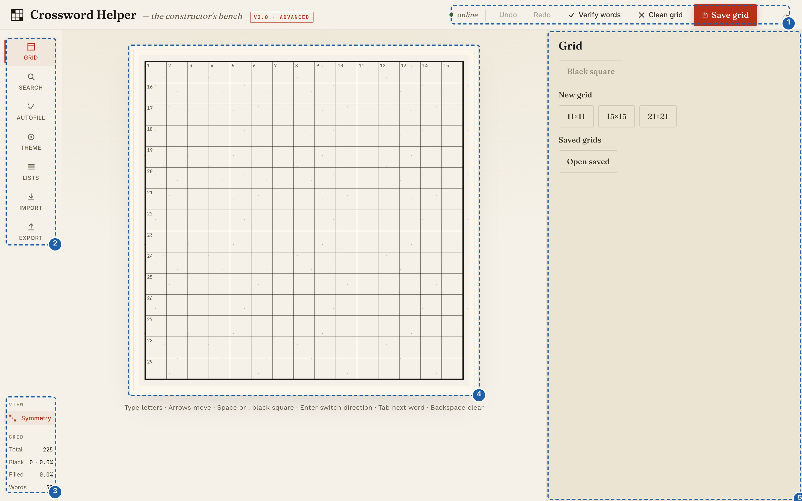

Install Crossword Helper on macOS
Goal
Install Crossword Helper and everything it depends on from its GitHub repository, then open the web app in your browser. You need to be able to open Terminal and paste commands. Linux works the same way; Windows is not supported.
Prerequisites
- Python 3.9 or later. Install it from python.org. The
python3that comes with macOS is a stub that opens an Xcode command-line-tools install dialog the first time you use it; either route works. unverified The stub's behaviour is quoted from the project README and could not be run on the Linux machine this guide was checked on. - Node.js 18 or later (LTS). Install it from nodejs.org.
npmcomes with it. - An internet connection: the setup step downloads Python and JavaScript packages.
Check what you have:
python3 --version
node --version
npm --version
Steps
1. Get the code
Either clone the repository:
git clone https://github.com/apassuello/crossword-helper.git
cd crossword-helper
or use Download ZIP on the GitHub page, extract it, then in Terminal change into the extracted folder (cd
followed by the folder's path) and run:
chmod +x setup.sh
A clone keeps the script executable, so the chmod is only needed after a ZIP download.
2. Run the setup script
./setup.sh
The script checks your Python and Node versions, then creates a virtual environment in venv/, installs
the Python packages from requirements.txt into it, installs the JavaScript packages with npm ci, and
builds the web interface into frontend/dist/. The packages go into venv/ and node_modules/ inside the
project folder, not into your system Python or global Node packages.
When it works, the output looks like this (from a Linux run; version numbers on your Mac will differ). After
=== Setup complete === the script prints a few more lines repeating how to start the app:
=== Crossword Helper Setup ===
[ok] Python 3.13
[ok] Node.js v22.22.0
Creating Python virtual environment...
[ok] Virtual environment created at venv/
Installing Python dependencies...
[ok] Python dependencies installed
Installing Node.js dependencies...
[ok] Node.js dependencies installed
Building frontend...
...
[ok] Frontend built to frontend/dist/
=== Setup complete ===
If a line starts with Missing:, install the tool it names (the message includes the download address) and
run ./setup.sh again. The script stops before it creates anything when a tool is missing.
3. Start the app
source venv/bin/activate
python3 run.py
The terminal prints a line ending in Running on http://localhost:5000 and keeps running. Leave it open.
4. Open it in your browser
Go to http://localhost:5000.


If run.py instead prints Port 5000 is in use. Start with PORT=<other> python3 run.py, another program
holds the port. Start on a different one and open that address instead:
PORT=5001 python3 run.py
Then open http://localhost:5001. Use that port wherever this guide says localhost:5000, and start the app the
same way every time. unverified On macOS the AirPlay Receiver service can hold port 5000; this is stated in a code
comment in run.py and was not reproduced on the Linux machine used to check this page.
5. Stop and restart later
Press Ctrl+C in the terminal to stop the app. To start it again, from the project folder (put PORT=5001
before python3 if you used another port):
source venv/bin/activate
python3 run.py
Final Result
With the app running, the status label in the top bar reads online. You can also check from a second
Terminal window (replace 5000 with your port if you started on another):
curl http://localhost:5000/api/health
{"architecture":"cli-backend","components":{"api_server":"ok","cli_adapter":"ok"},"status":"healthy","version":"2.0.0"}
Update to a newer version
Fetch the new code (git pull in a clone, or download a fresh ZIP) and run ./setup.sh again. The script
can be repeated: on a second run it reports Virtual environment already exists and reinstalls the
packages.
Word lists you uploaded are stored in data/wordlists/custom/ inside the project folder (saved grids are in
your browser and are not affected). A fresh ZIP in a new folder starts without your uploaded lists, so copy
that folder across. unverified Uploads also change the tracked file data/wordlists/metadata.json, which may make
git pull refuse to update; this was not reproduced.
Next Steps
- Build your first puzzle: Your first crossword.
- Something went wrong: Troubleshoot common problems.